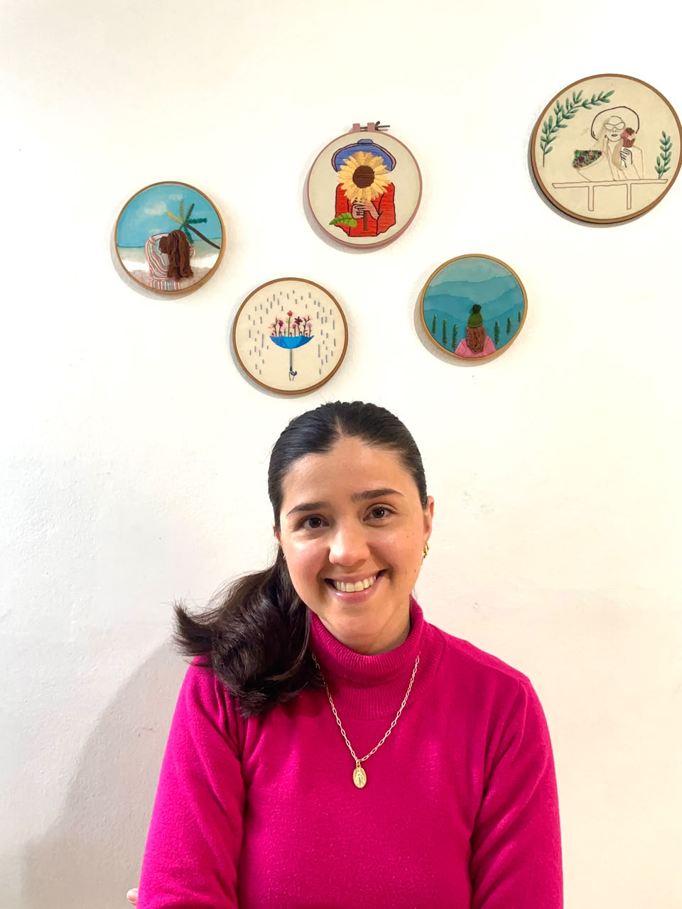
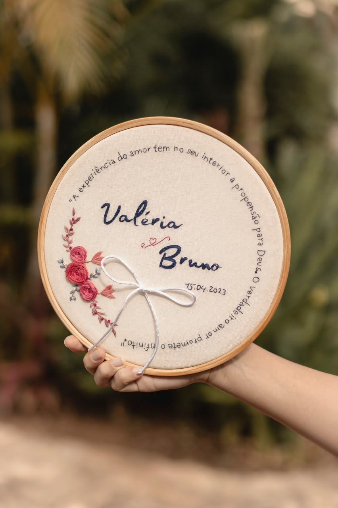
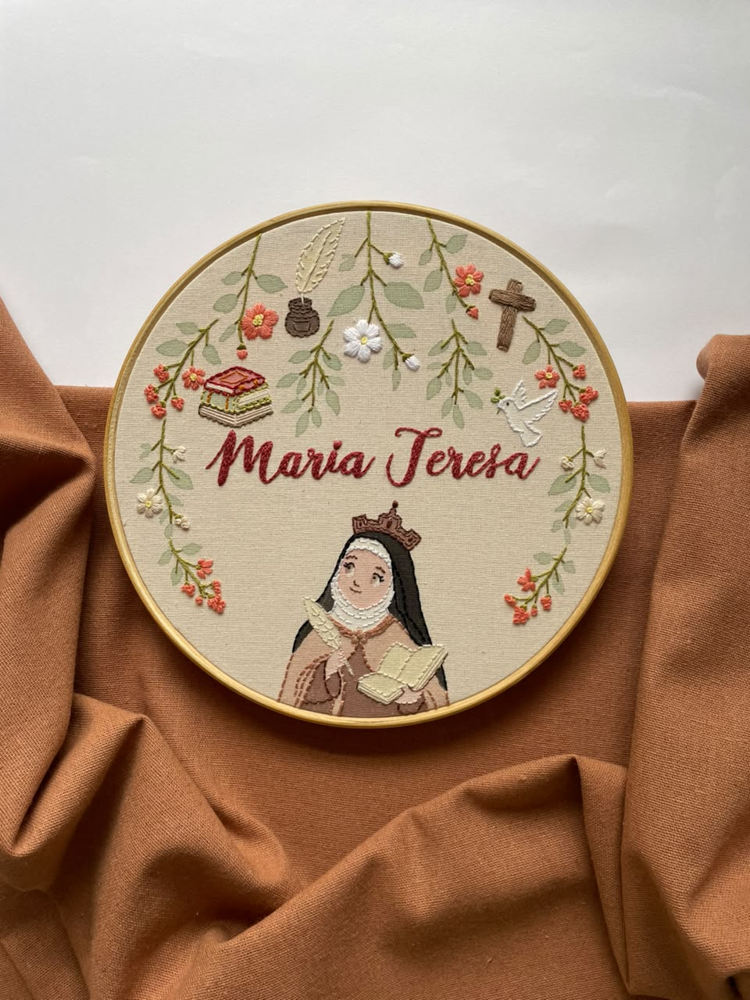
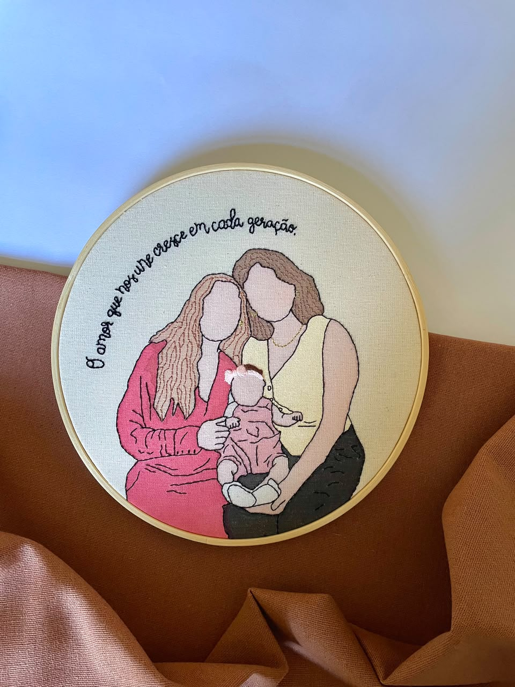
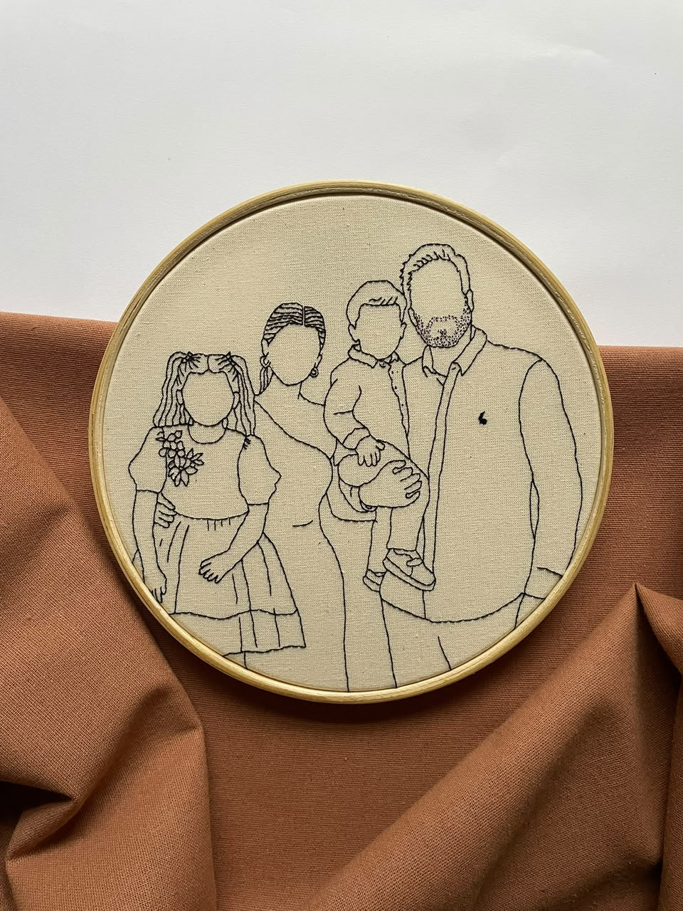
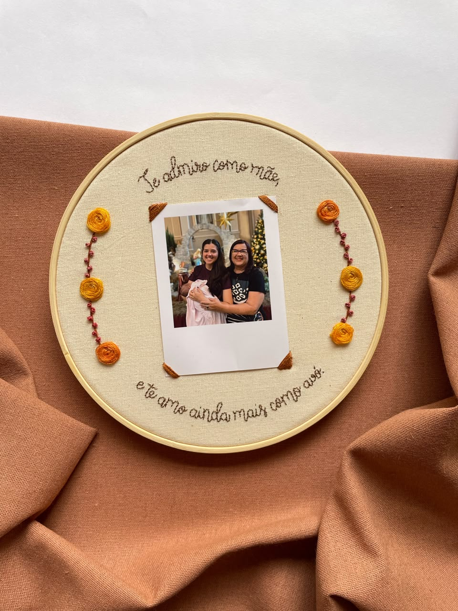
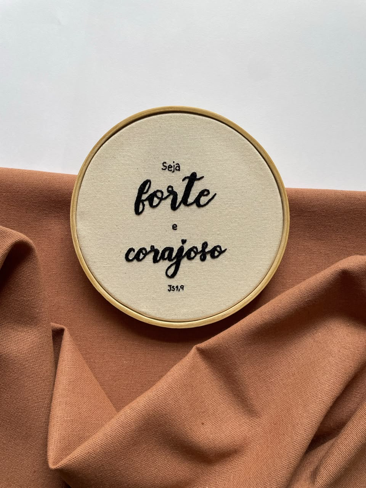
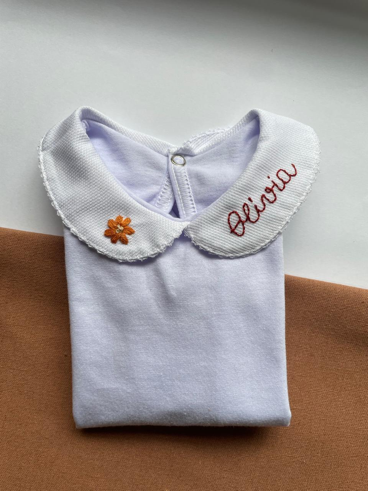
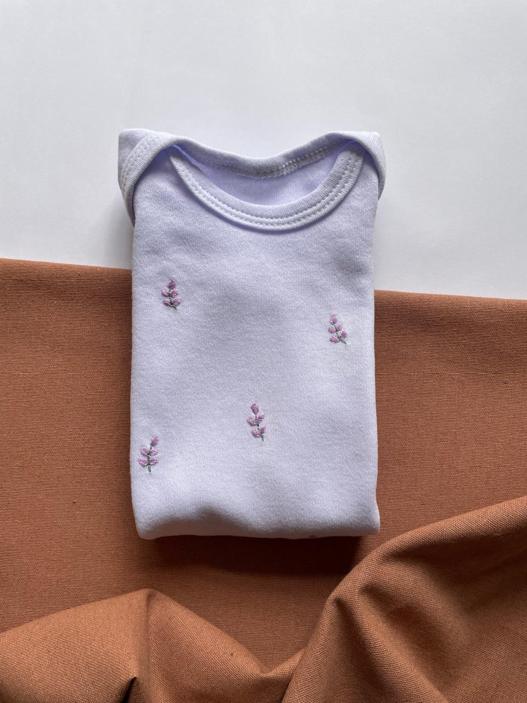
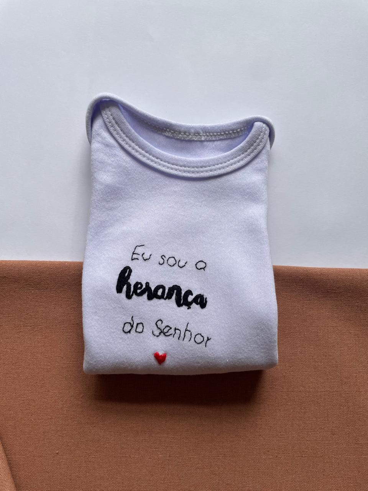

Cada ponto carregado de cuidado, criado para eternizar os momentos mais importantes da sua vida.

O bordado entrou na minha vida como uma forma de expressar sentimentos, transformar momentos em lembranças e eternizar histórias que merecem ser guardadas com carinho.
Cada peça é feita à mão, com calma, cuidado e amor. Acredito que aquilo que é feito com afeto carrega um valor que vai além do material.
O Achando a Linha nasceu durante a pandemia, a partir de um hobby que, com o tempo, se transformou em trabalho. Hoje, cada peça une bordado e aquarela em criações delicadas, afetivas e carregadas de significado.
"Aquilo que é feito com afeto carrega um valor que vai além do material."— Valéria Salazar

Criado especialmente para o dia do casamento, é uma peça pensada para conduzir as alianças de forma simbólica, delicada e cheia de significado, eternizando um dos momentos mais importantes da história do casal.
A partir de R$320,00
Bordado decorativo personalizado para o quartinho do bebê, com nome, detalhes e elementos que representam essa nova vida tão especial que está chegando.
A partir de R$320,00
Sua fotografia ganha vida através da aquarela. Cada detalhe é cuidadosamente preenchido, criando uma peça delicada, expressiva e cheia de significado.
A partir de R$290,00
Sua fotografia representada por traços sutis e essenciais. O estilo minimalista valoriza a simplicidade e a emoção do momento, resultando em uma peça elegante e atemporal.
A partir de R$250,00
Um porta-retrato delicado, bordado nas extremidades com espaço central para uma fotografia em estilo polaroide. Perfeito para eternizar momentos com pessoas especiais.
A partir de R$290,00
Bordados já finalizados, com frases, santos e mensagens especiais. São peças prontas para envio imediato, ideais para presentear com carinho e significado. Para consultar os modelos disponíveis, entre em contato clicando no botão "Encomendar agora".
A partir de R$110,00✦ Frete incluso no valor final. Cada bordado é pensado de forma única e os valores podem variar conforme o pedido. Entre em contato para um orçamento personalizado. ✦
Bodys 100% algodão, bordados à mão, pensados para os primeiros momentos da vida do seu bebê. Todos os modelos são manga longa.

Body com o nome do bebê bordado na gola, acompanhado de um elemento personalizado conforme sua preferência. Perfeito para a primeira roupinha ainda na maternidade.

Flores de lavanda espalhadas pelo body, todas bordadas ponto a ponto. Para dias leves e cheios de delicadeza, assim como a infância deve ser.

A frase bordada à mão com um coraçãozinho vermelho. Para as missas de domingo e os momentos de fé em família.
Cada bordado é único, pensado com carinho para eternizar o que é mais importante para você. Fale comigo e vamos criar juntos.
Falar no WhatsApp